DALE CARNEGIE · HOW TO WIN FRIENDS · PART ONE · CHAPTER 1 · PDF p25–37
"If You Want to Gather Honey, Don't Kick Over the Beehive"
Criticism almost never changes anyone. It makes them defend themselves and resent you. If you want the honey (the change you are after), leave the hive alone.
Carnegie opens the book with a surprising pile of evidence: killers, gangsters, a disgraced cabinet secretary and a sitting President all had one thing in common. None of them blamed themselves. If people who did truly terrible things can still feel they were in the right, then the colleague who missed a deadline or the child who spilled milk certainly will. So criticism mostly fails: it puts the other person on the defensive, hurts their pride, and leaves resentment that can last for decades. The chapter then shows people who learned to stop (Lincoln, who once nearly fought a duel over a mocking letter; a test pilot whose mechanic nearly killed him) and ends with a simple alternative: try to understand why people do what they do.
Principle 1 of Part One
Don't criticize, condemn or complain.
How the chapter fits together
pdf p24–25 · read this first
Where it sits. This is the first chapter of Part One, "Fundamental Techniques in Handling People" (pdf p24 is just the Part's title page). Part One has three principles, one per chapter: don't criticize, condemn or complain (this chapter), give honest and sincere appreciation (Ch.2), and arouse in the other person an eager want (Ch.3). Before it come the preface and Carnegie's nine suggestions for using the book (front matter). This chapter is the "stop doing" half of the next one: first stop attacking people's pride, then start feeding it honestly.
The argument as a chain. Each row reacts to the one before it.
Problemwe criticize to make people change→it almost never works
EvidenceCrowleyCapone · SchultzSing Sing inmates→nobody blames himself
Whycriticism = attack on pride→defend · justify→resentment, no change(Skinner: reward beats punishment)
Proofhard hatsRoosevelt vs TaftTeapot Dome→criticism returns home, like a homing pigeon
Who learnedLincoln (duel → unsent letter to Meade)Twain's unmailed lettersFranklinBob Hoover
Cost to youCarnegie vs Richard Harding Davis→people run on emotion, not logic→Hardy, Chatterton
Instead"Father Forgets"→understand why they did it→Principle 1
Limitscorrection is still allowed→change how, not whether (Part Four)
About the title: a beehive holds the honey you want, but kick it and you get stung and no honey. The people around you hold the cooperation you want; criticism is the kick. (The chapter never explains the title; this reading is ours.)
01 · THE OPENING STORY
"Two Gun" Crowley: a cop killer who thought he had a kind heart
pdf p25–26
Carnegie starts with the most extreme case he can find, on purpose. If even this man felt innocent, the rest of us will too.
New York · 7 May 1931150 police and detectives10,000 onlookersover an hour of gunfire
The siege. After weeks of searching, New York police cornered "Two Gun" Crowley (a gunman known, oddly, for not drinking or smoking) in his girlfriend's top-floor flat on West End Avenue. About 150 officers surrounded the building. They cut holes in the roof, pumped in tear gas, and set machine guns on the neighbouring rooftops. For more than an hour a smart residential street echoed with gunfire while Crowley, crouched behind an armchair, kept shooting back and some ten thousand people watched from the pavements. Police Commissioner E. P. Mulrooney later called him one of the most dangerous criminals the city had ever faced, a man who would kill at the slightest excuse.
How he saw himself. During the shoot-out, wounded and bleeding onto the page, Crowley wrote a note addressed to whoever might find it. In it he described himself as a tired man with a good heart who would never hurt anyone:
"Under my coat is a weary heart, but a kind one."Crowley's note, as quoted by Carnegie (pdf p25)
What he had actually done. Not long before, Crowley had been parked with his girlfriend on a country road on Long Island. A policeman walked up and asked to see his licence. Crowley said nothing, drew his gun and shot the officer down, then jumped out, took the dying man's own revolver and shot him again where he lay.
The ending. He was sentenced to the electric chair. When he reached the death house at Sing Sing prison, he did not admit that this was the price of killing people. He said, in effect, that this was what he got for defending himself.
The point Carnegie draws: Crowley did not blame himself for anything. Not the killing, not the siege, not the sentence. In his own story he was the victim.
Dated wording. The book says Crowley was at a "necking party with his girl friend" in a parked car; today we would just say he was sitting in a parked car with his girlfriend.
Picture it
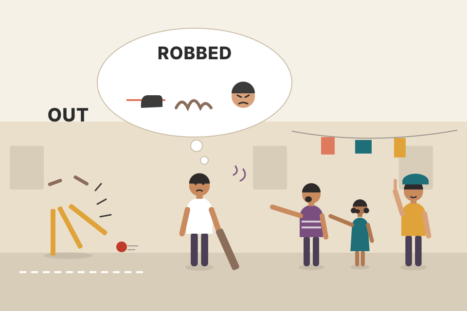
A batsman in a gully cricket match is clearly out, the ball smashing his stumps in full view of both teams. He still walks off muttering that the bowler stepped over the line, the pitch was uneven and the "umpire" (his neighbour's cousin) has always hated him. Everyone else saw the stumps fly; in his own head he was robbed.
Where it breaks: the batsman is protecting his pride over a game. Crowley was protecting his self-image after taking a life. The picture shows the same reflex, not the same scale, and that is exactly Carnegie's point: the reflex works at every scale.
What's happening behind it
The book's explanation: people tell themselves a story in which their actions made sense. Crowley's story was "I was defending myself", so in his mind no blame was due.
Beyond the book: psychologists call two parts of this the self-serving bias (we credit our successes to ourselves and our failures to circumstances) and the fundamental attribution error (we explain other people's failures by their character, but our own by the situation). Leon Festinger's idea of cognitive dissonance (1957) adds the engine: holding "I am a good person" and "I did a terrible thing" at the same time is so uncomfortable that the mind quietly edits one of them, and it is usually the second.
At work
After an outage, the engineer who pushed the bad config almost always has a version where it made sense: the change looked tiny, staging passed, the alert was already noisy. That is not lying; it is Crowley's reflex in a mild form. If your post-incident review opens with "who did this?", you will get the self-defence story and nothing else. If it opens with "walk me through what you saw at each step", you get the facts you need to fix the system.
Interview angle. "Tell me about a time you made a mistake" is partly a test of this exact reflex. Answers that drift into "well, the requirements were unclear and QA missed it" sound like the Sing Sing death house. Strong answers name your own part in one sentence, then spend the time on what you changed afterwards.
Connects to
The same habit in gangsters and prison inmates: the next plate.
Capone, Schultz and the men in Sing Sing: every one of them innocent in his own eyes
pdf p26
Carnegie asks whether Crowley was a strange exception, and answers with three more cases that get steadily closer to ordinary people.
Al Capone, the most notorious gang boss in Chicago and "Public Enemy" in the papers, complained that he had given the best years of his life to helping people enjoy themselves, and got nothing back but abuse and a life on the run. He saw himself as a public benefactor whom nobody appreciated or understood.
Dutch Schultz, one of New York's most notorious gangsters, told a newspaper interviewer that he too was a public benefactor, and he meant it. He later died in a hail of gangster bullets in Newark.
Lewis Lawes, for many years the warden of Sing Sing prison, wrote to Carnegie about this very question. His experience: very few inmates think of themselves as bad. They are as human as anyone else, so they explain and justify why they "had to" break a safe or fire first. With reasoning that is sometimes sound and sometimes not, they convince even themselves, and most insist they should never have been locked up at all.
"Few of the criminals in Sing Sing regard themselves as bad men."Warden Lewis Lawes, in a letter quoted by Carnegie (pdf p26)
The turn of the argument. If gangsters and convicted killers do not blame themselves for anything, what chance is there that the people we deal with every day (a colleague, a supplier, a teenager) will blame themselves for something far smaller just because we pointed it out?
Try it: two versions of the same person
Each card shows how the world described the person. Tap to see how they described themselves.
Open all four, then look at the pattern.
Picture it
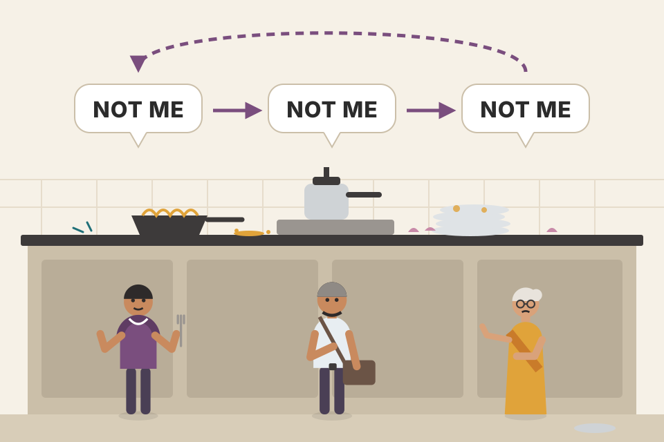
In a joint family, ask each person who left the kitchen in a mess. The teenager was "only making Maggi for everyone", the uncle "had an early meeting", the grandmother "cleaned it yesterday, so it's someone else's turn". Each story is true enough to the person telling it, and the kitchen is still a mess.
Where it breaks: in the kitchen everyone is a little bit right. Capone and Schultz were not; their stories were self-serving fiction. The family scene shows how easy it is to sincerely believe your own version, not that every version is equally true.
What's happening behind it
The book's explanation, through Lawes: people rationalize. They build a chain of reasons, logical or not, until the act looks necessary, and once they believe the chain, blame feels unfair. Criticism from outside does not break the chain; it gives them a reason to defend it.
Beyond the book: Roy Baumeister and colleagues (1990) asked ordinary people to write about a time they angered someone and a time someone angered them. The pattern matched Lawes's inmates in miniature: as the one who caused harm, people tend to tell stories in which they were provoked, had no choice, or meant well, while victims tell stories of harm with no reason. Each side is honestly remembering a different story.
At work
A teammate merged a 2,000-line PR with no tests. Before you write the comment, assume they have a reason they find convincing: the release date, a PM asking for it "today", a belief that tests would come in the next PR. You do not have to accept the reason, but if you ignore it, your comment reads as an attack on a story they believe, and they will defend the story instead of fixing the PR.
Interview angle. "Tell me about a conflict with a colleague." The strongest answers describe the other person's reasoning fairly ("she was optimising for the launch date, I was worried about on-call load"). It shows you understood this chapter's point: the other side always has a story in which they are reasonable.
Connects to
"Try honestly to see things from the other person's point of view": Part Three, Ch.8.
Why criticism backfires: it is futile, and it is dangerous
pdf p27
Two men who learned it. John Wanamaker, who founded the department stores that carried his name, said he had worked out thirty years earlier that scolding was foolish: he had enough work overcoming his own shortcomings without getting upset that other people were not as clever as he wished. Carnegie admits it took him far longer, about a third of a century of blundering, to notice the pattern that runs through this chapter: ninety-nine times out of a hundred, people do not criticize themselves for anything, however wrong they are.
From that observation he makes two claims about criticism:
It is futile
It puts the other person on the defensive. Their energy goes into justifying themselves, not into changing.
It is dangerous
It wounds their pride, hurts their sense of being important, and stirs up resentment against you.
The science he cites.
B. F. Skinner, the behavioural psychologist, showed in animal experiments that an animal rewarded for good behaviour learns much faster and remembers far better than one punished for bad behaviour. Carnegie adds that later studies found the same in humans. So criticism does not produce lasting change, and it often earns resentment on top.
Hans Selye, the psychologist known for his work on stress, put the emotional side in one line:
"As much as we thirst for approval, we dread condemnation."Hans Selye, quoted by Carnegie (pdf p27)
The cost. The resentment that criticism creates can drag down the morale of employees, family members and friends, and the thing you criticized often stays exactly as it was.
Picture it
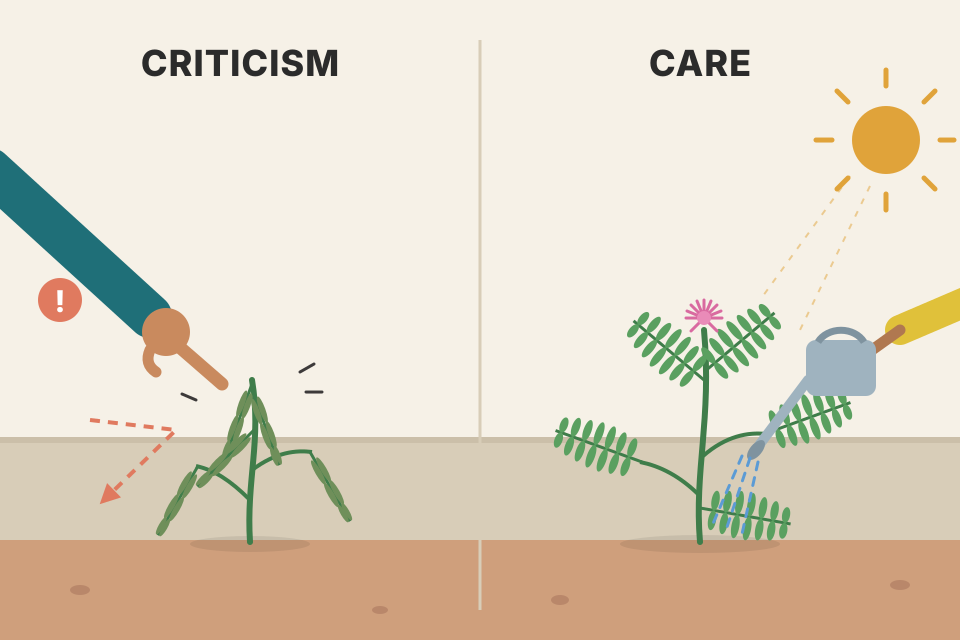
Touch the leaves of a chhui-mui (touch-me-not) plant on a village path and they fold shut at once. Criticism is that touch: the person closes up to protect themselves, and nothing you say after that gets in. Sunlight and water, not poking, are what make the plant grow.
Where it breaks: the plant opens again in a few minutes and holds no grudge. People can stay folded shut against you for years, as later stories in this chapter show.
What's happening behind it
The book's explanation: criticism hits two needs at once, the need to feel right (so people defend) and the need to feel important (so they resent). Carnegie develops the second need, the "desire to be important", in the very next chapter.
Beyond the book: modern psychology agrees with the direction of Skinner's point but adds nuance. Punishment can stop a behaviour quickly while the punisher is watching, but it teaches only what not to do, and the behaviour tends to come back when the threat is gone (which is exactly what happens in the hard-hat story next). Feedback research also finds that clear, specific correction is useful; what hurts is correction aimed at the person ("you're careless") rather than the task ("this query has no index").
At work
In a sprint retro, "the backend team keeps breaking the API" produces a defensive backend team and a long argument about whose fault the last bug was. "The last two API changes broke the mobile app; what would have caught them earlier?" produces a contract test. Same facts, aimed at the work instead of the people.
In 1:1s, notice Wanamaker's point about your own limits: the time you spend fuming that a junior "should know this by now" is time you could spend on the docs or the pairing session that would actually teach it.
Connects to
The desire to feel important, and honest appreciation as the cure: Ch.2.
The hard-hat inspector who stopped quoting the rule
pdf p27–28
The first everyday story, about an ordinary safety officer reporting what worked for him, shows the principle in a setting that has nothing to do with gangsters: getting people to follow a safety rule.
George B. JohnstonEnid, Oklahomasafety coordinator, engineering company
The situation. Part of Johnston's job was making sure field workers wore their hard hats on site.
The old way. Whenever he found someone bare-headed, he told them firmly what the regulation said and that they had to obey it. He got grudging, sulky compliance, and often the hats came off again as soon as he had walked away.
The new way. Next time, he first asked the workers whether the hats were uncomfortable or did not fit well. Then, in a friendly tone, he reminded them that the hat was there to protect them from injury, and suggested they keep it on whenever they were working.
The result. More people wore their hats, and there was no resentment or upset.
Notice what did not change: the rule. Johnston still corrected the behaviour. He dropped the condemnation ("you are breaking the regulation") and replaced it with a question about the cause and a reason that served the worker. This matters for the whole chapter: Principle 1 is about how you correct, not whether you do.
Picture it
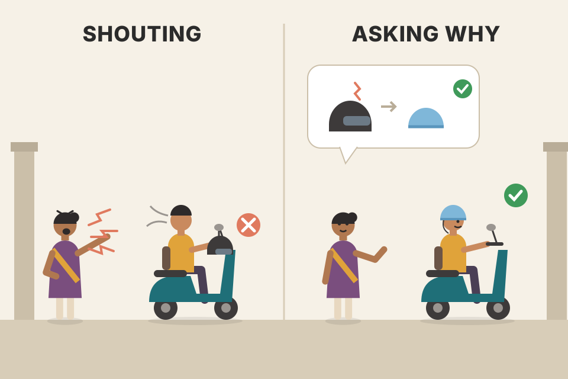
A mother in Hyderabad shouts at her college-going son every morning to wear his helmet on the scooter. He wears it to the end of the lane, then hangs it on the mirror. One day she asks instead: "Is it the heavy one that gives you a headache? Shall we get the light one your friend has?" The new helmet actually stays on his head.
Where it breaks: asking about the cause only works when there is a fixable cause. If he simply thinks helmets look uncool, a better fit will not help, and you need a reason that matters to him (his own safety, a friend's accident, the traffic fine).
What's happening behind it
From the book: the order "comply" pushed the workers onto the defensive, exactly as plate 3 predicts, so they complied only while watched. The question about comfort let them keep face, and the reminder that the hat protects them turned the rule from Johnston's demand into their own interest.
Beyond the book: this is the difference between compliance (doing it because you are watched) and internalisation (doing it because you agree). Psychologists who study motivation, such as Deci and Ryan's self-determination theory, find that rules people understand and feel some choice over are followed far more reliably when nobody is checking.
At work
Your hard hats are the team rules: tests with every PR, no direct pushes to main, updating the runbook after an incident. "Per the engineering guidelines, all PRs MUST include tests" gets you tests written only when you are the reviewer. "Was something making tests painful here? The fixtures for this service are a mess, I know. These tests are what let you change this code next month without a 2 a.m. page" gets you a teammate who writes them on their own, and sometimes a fixed fixture library.
Interview angle. "Tell me about a time you got people to follow a process they didn't like." Describe finding out why they resisted, fixing the real friction, and explaining what was in it for them, not escalating the rule.
Rewrite it
Pick a blunt message, decide how you would rewrite it, then reveal a Carnegie-style version and what changed.
Appealing to what the other person wants (their safety, not your rule): Ch.3.
05 · CRITICISM IN HISTORY
Roosevelt vs Taft: a feud that changed a presidential election and persuaded nobody
pdf p28
Carnegie says history is full of examples of criticism that achieved nothing, and picks one with enormous consequences: the quarrel between Theodore Roosevelt and William Howard Taft. By his account it split the Republican Party, put Woodrow Wilson in the White House, and through Wilson shaped America's part in the First World War.
What happened.
When Roosevelt left the presidency (the book says 1908), he backed his friend Taft, who was elected President.
Roosevelt went off to Africa on a lion-hunting trip.
When he came back he was furious. He attacked Taft publicly for being too conservative, tried to win the party's nomination for a third term himself, and when that failed formed his own "Bull Moose" party, nearly wrecking the Republicans.
In the election that followed, Taft and the Republican Party won only two states, Vermont and Utah: the worst defeat the party had ever suffered.
Did Taft accept the blame? No. Close to tears, he said he could not see what else he could have done:
"I don't see how I could have done any differently from what I have."William Howard Taft, quoted by Carnegie (pdf p28)
Carnegie's point. He says plainly that he does not know, and does not care, whether Roosevelt or Taft was really to blame. That is not the question. The point is that all of Roosevelt's attacks did not convince Taft he was wrong. They only made him work harder to justify himself, and repeat, tearfully, that he had done the only thing he could.
Dated detail. A former president heading off to shoot lions was admired in 1909 and reads very differently now; it does not change the lesson.
Beyond the book: the dates
The 1912 election is the one Carnegie means. Roosevelt's term actually ended in March 1909 (Taft was elected in November 1908, which is likely where the book's "1908" comes from), and the Africa trip ran from 1909 to 1910. Wilson won in 1912 with Roosevelt second and Taft third.
Picture it
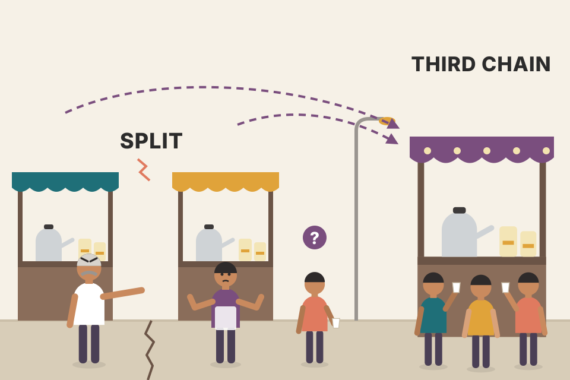
Two partners built a popular chai-and-snacks chain in Pune. The senior partner hands over day-to-day running to the junior and goes on a long trip. He returns, finds the junior has been "too cautious", and starts criticising him to staff and suppliers, then opens a rival outlet down the road. Customers split between the two, and a third chain that nobody was watching takes the market. The junior partner, meanwhile, is sure he did exactly what any sensible person would have done.
Where it breaks: a business feud can be settled by numbers; a national election also involved real policy differences. The picture is about what the criticism achieved (nothing, except a split), not about who had the better plan.
What's happening behind it
From the book: public criticism made Taft defend, not reflect. The more prominent the attack, the more the target's pride and public image are at stake, so the harder they dig in.
Beyond the book: commitment research (for example Robert Cialdini's work on consistency) shows that once someone has publicly taken a position, they feel strong pressure to stay consistent with it. A public attack forces the target to defend their position in public, which locks it in further.
At work
A staff engineer criticises a former mentee's architecture choice in an all-hands meeting. The mentee now has to defend it in front of everyone, the team picks sides, and the migration stalls for a quarter while a competitor ships. Whether the architecture was right was never settled; the public criticism just made it impossible for anyone to change their mind.
Interview angle. "Tell me about a disagreement with your manager." Avoid the Roosevelt version (they were wrong, I said so loudly, things fell apart). Tell the version where you raised it privately, understood their constraints, and found a way forward, or disagreed and committed.
Connects to
Why you cannot win an argument even when you are right: Part Three, Ch.1.
Never telling someone flatly that they are wrong: Part Three, Ch.2.
06 · EVEN WHEN THE GUILT IS PROVEN
Teapot Dome: the man everyone condemned, and the wife who said he was the victim
pdf p28–29
The second case from history is stronger, because here there is no doubt about the wrongdoing. The Teapot Dome oil scandal dominated American newspapers in the early 1920s; Carnegie calls it the biggest public scandal in living memory.
Albert B. Fall, Secretary of the InteriorPresident Harding's cabinet$100,000 "loan"Elk Hill and Teapot Dome reserves
The job. Fall was put in charge of leasing two government oil reserves, Elk Hill and Teapot Dome, which had been set aside for the Navy's future use.
The deal. Instead of letting companies bid against each other, he handed the lucrative contract straight to his friend Edward L. Doheny.
The "loan". Doheny then gave Fall what he described as a loan of one hundred thousand dollars.
The overreach. Fall sent United States Marines to drive off rival companies whose neighbouring wells were drawing oil out of the Elk Hill reserve.
The exposure. The rivals, pushed off their land at gunpoint, went to court, and the whole scheme came out.
The fallout. The scandal ruined Harding's administration, disgusted the country, threatened to wreck the Republican Party, and sent Fall to prison.
Did Fall repent? Never, says Carnegie, even though he was condemned as harshly as almost anyone in public life. Years later, Herbert Hoover suggested in a speech that President Harding's death had been brought on by the worry of being betrayed by a friend. When Fall's wife heard this, she leapt up in tears, shook her fists, and insisted her husband had never betrayed anyone, that no amount of gold could have tempted him, and that he was the one who had been betrayed and sacrificed.
The lesson Carnegie draws. This is human nature at work: people who did wrong blame everyone except themselves, and we are all like that. So the next time we want to criticize someone, he says, remember Capone, Crowley and Fall, and expect the person to justify themselves and condemn us in return, or, like gentle Taft, to say they could not have done anything differently.
"Criticisms are like homing pigeons. They always return home."Carnegie (pdf p29)
Beyond the book: the record
Teapot Dome is in Wyoming; the other reserve is usually called Elk Hills, in California. Fall was convicted of accepting a bribe in 1929 and became the first former US cabinet member to go to prison. Doheny, oddly, was acquitted of giving the same bribe. Harding died in office in 1923, before the full scandal came out.
Picture it
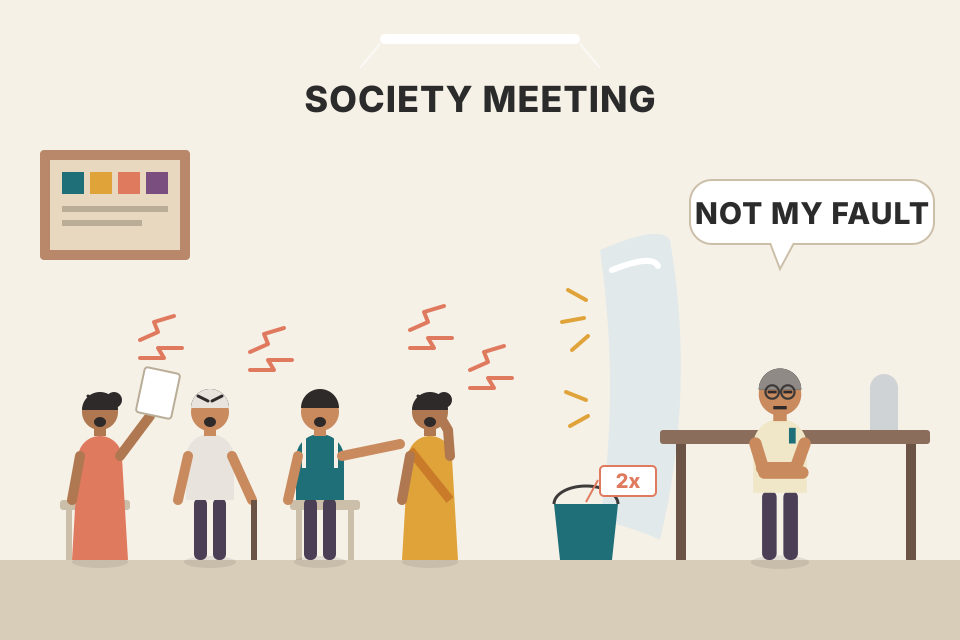
A housing society secretary is caught giving the painting contract to his brother-in-law at double the market rate. At the society meeting, residents shout at him for an hour. He does not apologise; he says the other quotes were "unreliable", and his wife tells the neighbours he is the only one who ever does any work for the building and this is his reward.
Where it breaks: the society can still remove him and recover the money, just as Fall still went to prison. Carnegie's point is that the shouting did not make him admit anything; consequences and criticism are different tools.
What's happening behind it
From the book: the more harshly someone is condemned, the more they and the people close to them need a story in which they are the one wronged. Mrs Fall's outburst is that story, told by someone who loves him.
Beyond the book: when we feel our identity is attacked, the brain treats it much like a physical threat, and people under threat think less flexibly. That is why condemnation of someone already in disgrace tends to harden them rather than open them up.
At work
A teammate bypassed review and shipped a change that leaked customer emails into logs. There will be consequences, and there should be. But if the incident channel fills with "how could anyone be this careless", you will not get the honest timeline you need to make sure it never happens again; you will get a defence. Keep accountability (process, access, a written review) separate from condemnation (attacks on the person).
Connects to
Letting the other person save face even when they are wrong: Part Four, Ch.5.
"If you must find fault, begin with praise": Part Four, Ch.1.
07 · LINCOLN, PART 1
Young Lincoln, a mocking letter, and a duel with broadswords
pdf p29–30
Why Lincoln. Carnegie turns to the person he knew best. He spent ten years studying Abraham Lincoln and three years writing and rewriting a biography, Lincoln the Unknown, with special attention to how Lincoln dealt with people. He opens with Lincoln's death: on the morning of 15 April 1865, shot by John Wilkes Booth, Lincoln lay dying in a cheap lodging house across the street from Ford's Theater, stretched diagonally across a bed too short for him, under a cheap print of Rosa Bonheur's painting The Horse Fair and a flickering gas lamp. At the bedside, Secretary of War Edwin Stanton said that there lay the most perfect ruler of men the world had ever seen.
"There lies the most perfect ruler of men that the world has ever seen."Edwin Stanton at Lincoln's deathbed, quoted by Carnegie (pdf p30)
So did Lincoln criticize people? Very much so, at first.
As a young man in the Pigeon Creek Valley, Indiana, he wrote letters and poems mocking people and dropped them on country roads where they were sure to be found. One of them caused resentment that lasted a lifetime.
As a young lawyer in Springfield, Illinois, he attacked opponents openly in letters printed in the newspapers, until he did it once too often.
Autumn 1842. He made fun of James Shields, a vain and combative local politician, in an anonymous letter in the Springfield Journal. The whole town laughed. Shields, proud and touchy, was furious, found out who had written it, rode after Lincoln and challenged him to a duel.
The duel. Lincoln was against duelling and did not want to fight, but could not refuse without losing his honour. Given the choice of weapons, he picked cavalry broadswords because his arms were so long, and took fencing lessons from a West Point graduate. On the agreed day the two men met on a sandbar in the Mississippi River, ready to fight to the death. At the last minute their seconds stepped in and stopped it.
What it taught him. Carnegie calls this the most lurid episode of Lincoln's personal life, and the one that taught him the lesson. He never again wrote an insulting letter, never again ridiculed anyone, and from then on almost never criticized anybody for anything.
Picture it
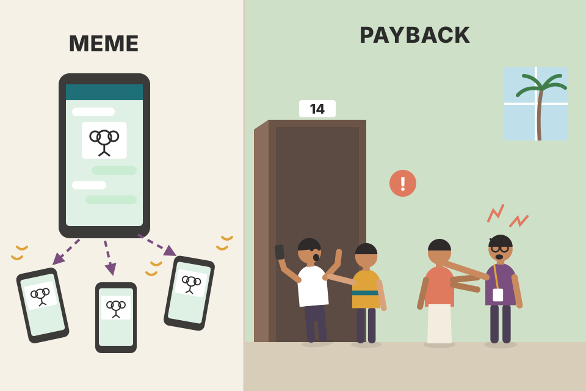
A college student in Kochi posts an anonymous meme mocking a classmate in the batch WhatsApp group. Everyone laughs, the screenshot spreads, and within a day the classmate has worked out who made it and turns up at his hostel room, livid, demanding a public apology or a fight in front of everyone. Friends drag them apart before it turns physical. The student never posts another meme about a real person.
Where it breaks: a sandbar duel with broadswords could have ended in a death; the WhatsApp version risks a friendship and a reputation. And unlike Lincoln's letter, a screenshot never disappears.
What's happening behind it
From the book: ridicule is criticism at its sharpest. It attacks a person's pride in public, so it produces the strongest resentment, strong enough in 1842 to make a man risk his life to answer it. Lincoln learned from near-disaster that wit spent on people costs far more than it earns.
Beyond the book: research on humiliation suggests it is one of the most intense emotions people report, and that it is strongly linked to wanting revenge. Ridicule does not just fail to change behaviour; it creates an enemy.
At work
The engineering equivalent of Lincoln's road-side letters: the sarcastic PR comment ("did you even run this?"), the screenshot of someone's bug pasted into a team channel with a laughing emoji, the "funny" retro slide about another team's outage. They feel harmless, the room laughs, and the target remembers for years. Senior engineers often learn this the way Lincoln did, by watching one joke turn into a long-running feud.
Gettysburg, General Meade, and the furious letter Lincoln never sent
pdf p30–33
A changed man. During the Civil War, Lincoln put one general after another in charge of the Army of the Potomac: McClellan, Pope, Burnside, Hooker, Meade. Each made disastrous mistakes, and Lincoln paced the floor in despair. Half the country savagely attacked these generals, but Lincoln, true to his famous call for malice toward none and charity for all, kept quiet. A favourite saying of his was the Bible's warning not to judge others if you do not want to be judged yourself. When his wife and others spoke harshly about the people of the South, he answered:
"Don't criticize them; they are just what we would be under similar circumstances."Lincoln, quoted by Carnegie (pdf p31)
And he had every reason to criticize. Carnegie gives one example, step by step below. The lesson is not that Lincoln felt no anger. He felt plenty. It is what he did with it.
Step through the story
The unsent letter, in short. Lincoln wrote to Meade (in what was, for the careful Lincoln of 1863, very severe language) making three points: Meade did not grasp how great a disaster Lee's escape was, since catching him would have ended the war, which would now drag on indefinitely; if Meade could not attack safely the previous Monday, he could hardly do better south of the river with at most two-thirds of the troops; and so the golden chance was gone, which distressed Lincoln beyond measure. Meade never saw it. Lincoln never mailed it; it was found among his papers after his death.
Carnegie's guess (he says it is only a guess) at what went through Lincoln's mind: it is easy to order an attack from the quiet of the White House; had he been at Gettysburg, seen a week of blood and heard the wounded screaming, he might not have been keen to attack either; with Meade's cautious temperament, he might have done the same; it was water under the bridge now. Sending the letter would make Lincoln feel better, but it would make Meade justify himself and condemn Lincoln, create bad feeling, damage his usefulness as a commander, and maybe drive him to resign. So Lincoln put it away, because bitter experience had taught him that sharp criticism almost always ends in nothing.
Two later echoes. Theodore Roosevelt said that when he faced a hard problem as President, he would lean back, look up at a large portrait of Lincoln hanging above his desk, and ask what Lincoln would do in his place. Carnegie suggests a pocket version: next time you want to tell someone off, take out a five-dollar bill, look at Lincoln's face on it, and ask how he would handle it.
Modern equivalent. Lincoln is still on the US five-dollar bill. For an Indian reader the same trick works with any rupee note: look at Gandhi's portrait and ask how he would handle it. (Our adaptation, not the book's.)
Picture it
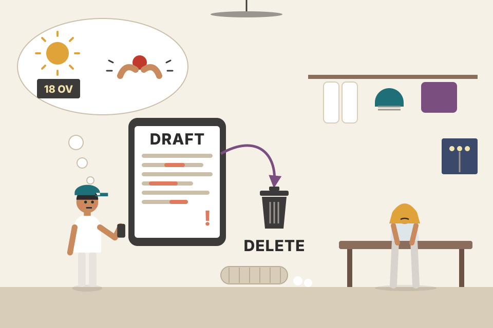
A team captain in a club cricket final watches his opening bowler bowl a no-ball that lets the opposing team win on the last ball. In the dressing room he types a long, cutting message to the bowler. Then he remembers how hot and tired he himself was after 18 overs in the field, how his own hands shook in last year's final, and that the bowler has to play next season too. He deletes the draft and says, "Tough one. We'll work on it in the nets."
Where it breaks: a lost cricket final is not a lost chance to end a war, and Lincoln had far more right to be angry. But the size of the stakes is exactly why the story is powerful: if Lincoln could hold back over that, we can hold back over a no-ball.
What's happening behind it
From the book: Lincoln did two things. First, he imagined himself in Meade's position (the blood, the screams, Meade's temperament), which turned "Meade is useless" into "I might have done the same". Second, he weighed what the letter would actually do: relieve his feelings, and make things worse. Feeling better was not a good enough reason to send it.
Beyond the book: writing an angry letter and not sending it is a well-known technique. Expressive-writing research (James Pennebaker's work) suggests writing feelings down does help people process them, while acting on anger in the moment tends to escalate it. Writing is the release; the send button is the damage.
At work
A vendor's API went down during your launch, after they promised it would not. Write the furious email. Then do Lincoln's test before sending: if you were their on-call engineer at 3 a.m. with your boss on the line, would you have done better? What will this email actually make them do: fix things faster, or loop in their legal team and stop picking up the phone? Usually the email that goes out is two lines asking for a post-mortem and a call.
Interview angle. "Tell me about a time you were frustrated with a teammate's performance." Good answers show the Lincoln move: you were angry, you checked what the other person was dealing with, and you chose the response that kept them useful to the team rather than the one that felt best.
Worked example: the message after a missed deadline
The letter you write
"I don't think you understand how bad this is. We had the demo locked, and because you didn't finish the integration, the client is now delaying the contract. Frankly I don't see how we fix this now."
Relieves your feelings. Puts them on the defensive. They will tell you the spec changed twice.
The message you send
"Rough day. I know the spec moved twice this week. Can we spend 20 minutes tomorrow on what got in the way, and what we can show the client on Friday?"
Keeps them on your side and still gets the problem solved. The angry draft stays in your notes app.
Letting a person keep their dignity after failure: Part Four, Ch.5.
09 · LETTING OFF STEAM SAFELY
Mark Twain's letters that never left the house, and why to start with yourself
pdf p33
Twain's temper. Mark Twain sometimes lost his temper and wrote letters hot enough to scorch the paper. To one man who had annoyed him he wrote, in effect, that what he needed was a burial permit, and Twain would happily arrange one. To an editor, he complained about a proofreader who kept "improving" his spelling and punctuation, ordered that his text be set exactly as written, and told the editor where the proofreader could keep his suggestions, in very insulting terms.
Why they did no harm. Writing them made Twain feel better and let him blow off steam. They never hurt anyone because his wife quietly took them out of the outgoing mail. None was ever sent.
Start with yourself. Then Carnegie asks: is there someone you would like to change, correct and improve? Fine, he says, he is all for it. But why not begin with yourself? Purely from self-interest, improving yourself pays far better than improving others, and it is much less dangerous. He closes with a line he attributes to Confucius:
"Don't complain about the snow on your neighbor's roof when your own doorstep is unclean."Attributed to Confucius, quoted by Carnegie (pdf p33)
Reflect, then reveal
Think of one person who annoyed you this week. Write the message you would love to send them, as sharp as you like. Nobody sees this; it is not saved anywhere.
Picture it
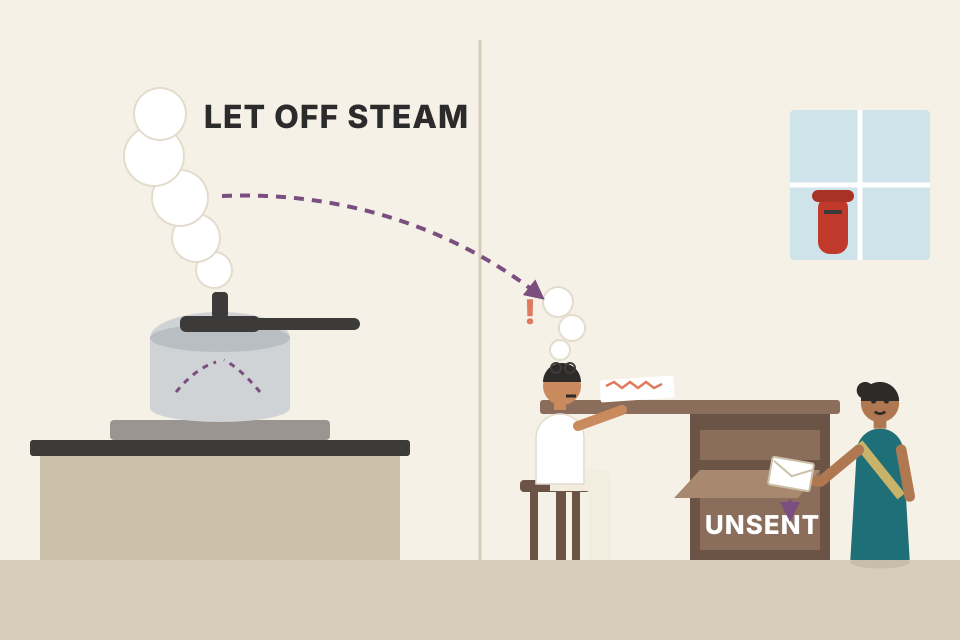
A pressure cooker in an Indian kitchen needs its whistle. The steam has to go somewhere; the whistle lets it out safely instead of the lid blowing off. Writing the furious letter is the whistle. Twain's wife, quietly lifting the letters out of the post, was the safety valve that made sure the steam never reached anyone.
Where it breaks: the cooker whistles on its own. You have to build the valve yourself: a draft folder, a rule like "never send an angry message the same day", or a friend you show it to first. Twain had his wife; most of us have an Undo-send button with a 10-second limit.
What's happening behind it
From the book: the feeling is real and needs an outlet, but the outlet does not have to be the other person. Separate "I need to let this out" from "I need them to change"; the letter does the first, and it is useless (worse than useless) at the second.
The "begin with yourself" turn works for a selfish reason, as Carnegie admits: you control your own habits completely and other people's barely at all, so effort spent on yourself has a far better return and no risk of a backlash.
Beyond the book: research on venting complicates the picture a little. Hitting a pillow or ranting to friends while dwelling on the anger (Brad Bushman's studies) tends to keep people angry longer. What seems to help is writing that tries to make sense of what happened and then setting it aside, which is closer to Lincoln's letter than to a rant.
At work
Build the valve into your tools. Keep a "drafts I didn't send" note. Use Slack's scheduled send to delay hot replies until tomorrow morning. For PR reviews, write all your comments, then reread them once before submitting and delete any that are about the author rather than the code. And when you catch yourself listing a teammate's flaws in your head, try Confucius's swap: what is one thing on your doorstep (an unclear ticket you wrote, a design doc you never shared) that made their mistake easier to make?
Connects to
Talking about your own mistakes before pointing out someone else's: Part Four, Ch.3.
Carnegie's nine suggestions for using this book (including reviewing your own week): front matter.
10 · CARNEGIE'S OWN WOUND
"Dictated but not read": the sting Carnegie still felt ten years later
pdf p33–34
Now Carnegie shows the cost from the receiving end, with an embarrassing story about himself.
The blunder. When he was young and eager to impress, Carnegie was writing a magazine article about authors and wrote to Richard Harding Davis, then a big name in American letters, asking how he went about his work. A few weeks earlier Carnegie had received a letter ending with the note "Dictated but not read", and he had been impressed: the writer must be very important and very busy. Carnegie was not busy at all, but he wanted Davis to think he was, so he ended his own short note with the same words.
The reply. Davis did not answer the question. He sent the letter back with a one-line put-down scrawled at the bottom:
"Your bad manners are exceeded only by your bad manners."Richard Harding Davis, as quoted by Carnegie (pdf p33)
The aftermath. Carnegie admits he had blundered and perhaps deserved it. But being human, he resented it, so sharply that when he read of Davis's death ten years later, the one thought still in his head (he says he is ashamed to admit it) was the hurt Davis had caused him.
The lessons he draws.
If we want to create a resentment that can fester for decades and last until death, all it takes is a little stinging criticism, no matter how sure we are that it is deserved.
People are not creatures of logic. They are creatures of emotion, full of prejudices and driven by pride and vanity. You are not arguing with a calculator.
Criticism can do lasting damage even to very talented people. Bitter criticism made the sensitive novelist Thomas Hardy, one of the finest writers in English, give up writing fiction for good. Criticism, Carnegie says, drove the English poet Thomas Chatterton to suicide.
Beyond the book: Hardy and Chatterton
Hardy stopped writing novels after the hostile reviews of Jude the Obscure (1895) and spent the rest of his long life writing poetry, so he gave up fiction, not writing. Chatterton died in London in 1770 at seventeen, poor and struggling; his death has traditionally been called suicide, though some historians have argued it may have been an accidental overdose of medicine. Carnegie's broad point (harsh criticism can crush sensitive people) does not depend on the details.
Picture it
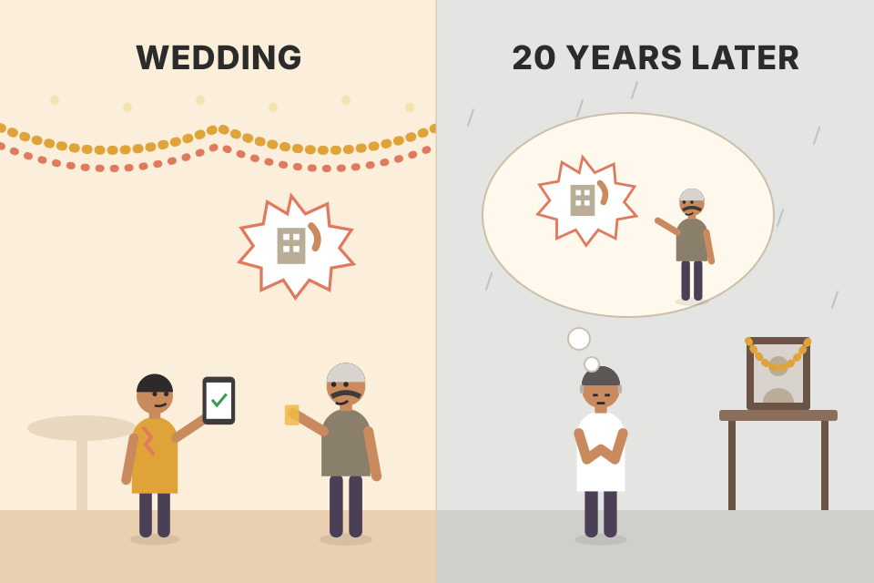
At a family wedding, a young cousin proudly tells a senior uncle about his first job offer. The uncle, a little too loudly, says, "That company? They hire anyone." The cousin had been showing off a bit, and the uncle is not entirely wrong. Twenty years later, at the uncle's funeral, that one sentence is still the first thing the cousin remembers about him.
Where it breaks: the uncle may have forgotten it by the next morning, and may even have meant it as a joke. The person who criticizes rarely knows how long the wound lasts; that is exactly why it is dangerous.
What's happening behind it
From the book: because people run on emotion and pride, the truth of a criticism does not protect you from its effect. Carnegie had made a real mistake, and he still held the grudge for a decade. Being right gives you no immunity.
Beyond the book: psychologists have repeatedly found that negative events weigh more heavily and are remembered longer than positive ones of the same size, a pattern Roy Baumeister and colleagues summed up as "bad is stronger than good" (2001). One cutting remark can outweigh many kind ones.
At work
A senior engineer replies to a junior's over-eager, slightly pompous design doc with a one-line roast in the comments. The doc deserved some pushback. But the junior now remembers that engineer as the person who humiliated them, avoids asking them questions, and five years later, as a hiring manager at another company, quietly passes on the senior's application. The lesson is Carnegie's: being right about the doc did not make the roast cheap.
Interview angle. "Tell me about the best and worst feedback you've received." Many people's "worst" is a Davis-style one-liner: correct, but delivered to wound. Explaining why it failed, and how you give feedback differently because of it, shows maturity.
Why people crave a feeling of importance (the Davis note hit Carnegie's): Ch.2.
11 · THE CHARACTER IT TAKES
Franklin, Carlyle, and why any fool can criticize
pdf p34
Benjamin Franklin was tactless as a young man, but he became so skilled and diplomatic with people that he was made the American ambassador to France. His secret, in his own words as Carnegie gives them: he resolved to speak ill of no one, and to say all the good he knew about everybody.
"I will speak ill of no man . . . and speak all the good I know of everybody."Benjamin Franklin, quoted by Carnegie (pdf p34)
Carnegie's own summary line: any fool can criticize, condemn and complain, and most fools do. Being understanding and forgiving takes character and self-control. He adds Thomas Carlyle's view that a great man shows his greatness by the way he treats "little men" (people with less power or status than him).
Note how this reframes the principle. Criticizing is not presented as strong and holding back as weak. It is the other way round: criticism is the easy reflex that anyone can manage, and restraint is the harder skill.
Beyond the book: how Franklin changed
In his Autobiography, Franklin describes a friend telling him he was known as proud and overbearing in conversation. He set himself a rule to stop contradicting people bluntly and to stop asserting his own opinions as certain, using softer phrases like "I imagine" or "it appears to me". Carnegie retells this in Part Three. (Franklin represented the United States in France from 1776 to 1785.)
Picture it
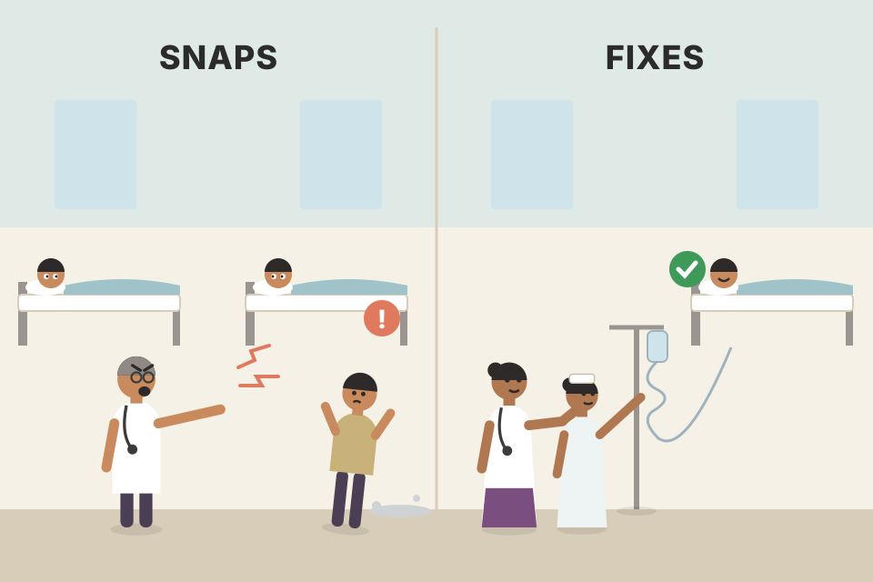
Two senior doctors in a busy government hospital in Chennai. One snaps at the ward boys and junior nurses in front of patients whenever something goes wrong; the other quietly asks what happened and fixes it. Everyone in the hospital knows which of the two is truly the great doctor, and it is not decided by who has the more impressive degrees.
Where it breaks: in a real emergency a doctor may have to give sharp, urgent instructions, and that is not the same as condemning someone. Carlyle's test is about how you treat people afterwards, when you have the power to humiliate them and choose not to.
What's happening behind it
From the book: criticism is a reflex; understanding needs effort and self-control. That makes restraint a signal of character: people read it as strength because they know how easy the alternative is.
Beyond the book: Carlyle's line describes power. People with authority over others (a tech lead over interns, a client over a vendor) can criticize at almost no cost to themselves, so how they treat those people is the clearest view of their character. Studies of workplace incivility (Christine Porath and Christine Pearson) find that people on the receiving end of rudeness from those above them cut their effort, their time at work and the quality of their work.
At work
Carlyle's "little men" today are the intern, the new graduate, the contractor, the support engineer who escalates a ticket at 6 p.m., the vendor's junior developer on the call. How you respond when one of them makes a mistake is watched by everyone in the room and remembered by all of them.
Interview angle. Interviewers for lead roles often ask "How do you deal with an underperforming team member?" A Franklin-style answer starts with understanding (what is getting in the way?), keeps the conversation private, and talks about the person's strengths as well as the gap. "I tell them directly what they're doing wrong" on its own sounds like the fool's version.
Bob Hoover and the mechanic who filled his plane with the wrong fuel
pdf p34–35
This is the chapter's clearest picture of what Principle 1 looks like when someone really has made a serious, dangerous mistake. Carnegie takes it from an account in the magazine Flight Operations.
Bob Hoover, test pilot and air-show starSan Diego → Los Angeles300 feet upboth engines stop
The emergency. Hoover, a famous test pilot who often flew at air shows, was flying home to Los Angeles after a show in San Diego. At three hundred feet, both engines suddenly cut out. With skilful flying he got the plane down. It was badly damaged, but nobody was hurt.
The cause. The first thing Hoover did after landing was check the fuel. As he suspected, the Second World War propeller plane had been filled with jet fuel instead of gasoline.
The meeting. Back at the airport he asked to see the mechanic who had serviced the plane. The young man was already sick with guilt and crying as Hoover walked up. He had just cost the loss of a very expensive aircraft and had nearly killed three people.
What everyone expected. A furious tongue-lashing from a proud, precise pilot who had every right to give one.
What Hoover did. He did not scold the mechanic or even criticize him. He put his arm around the man's shoulders and told him that, to show he was sure it would never happen again, he wanted him to service Hoover's F-51 the next day.
"I want you to service my F-51 tomorrow."Bob Hoover to the mechanic, quoted by Carnegie (pdf p35)
Why this one matters. Every earlier story was about criticism that failed to persuade. This one shows that the alternative is not pretending nothing happened. The mistake was obvious to both men; the mechanic did not need it explained. Hoover skipped the condemnation, which would have taught nothing new, and went straight to the thing that mattered: making sure it never happened again, by showing trust.
Picture it
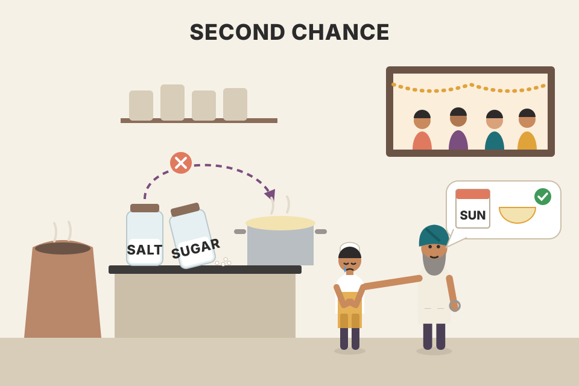
A new cook at a busy dhaba in Punjab puts salt instead of sugar in a large batch of kheer, and it goes out to a wedding party. He is in tears in the kitchen. The owner, who has every reason to shout, puts a hand on his shoulder and says, "Tomorrow, you make the kheer for the Sunday rush. I know you'll check twice." The cook never mixes up the jars again.
Where it breaks: ruined kheer is cheap; a wrecked plane and three nearly-lost lives are not. And a smart owner would also put labels on the jars, the way an airport fixes nozzles and checks, so that no single person's care is the only defence.
What's happening behind it
From the book: the mechanic was already punishing himself; criticism could add only humiliation and resentment. Hoover's gesture kept the young man's pride intact and gave him a reason to be extremely careful: his hero had just publicly bet on him.
Beyond the book: this is the core idea behind blameless post-mortems in aviation and software reliability (for example the Google SRE practice and aviation's confidential incident reporting). If people are punished for honest mistakes, they hide them, and the system never learns. If they are trusted, they report early and fully. It is also why later aviation added a physical fix to this exact mistake: jet-fuel nozzles are made too wide to fit the tanks of many piston aircraft.
At work
A new engineer runs a migration against the production database instead of staging and drops a table; you spend the night restoring from backup. The next morning they are pale and expecting to be fired. The Hoover move: "Thanks for flagging it immediately, that saved us hours. I'd like you to own the next migration, and let's pair on adding a check so the script refuses to run against prod without a flag." Then you fix the system (separate credentials, confirmation prompts), because a good process should not depend on one person never making a mistake.
Interview angle. "Tell me about a time someone on your team made a costly mistake." This is the story interviewers hope for: you kept the person's dignity, handed them a real responsibility, and fixed the root cause. Avoid answers where the main event is how you told them off.
Which response? (Hoover's test)
Pick a response to see how Carnegie would judge it.
Connects to
Giving someone a fine reputation to live up to (Hoover's "you'll never do this again"): Part Four, Ch.7.
"Father Forgets": a parent's nightly regret over a day of fault-finding
pdf p35–37
Carnegie's careful framing. Parents are often tempted to criticize their children. You might expect him to say "don't". He deliberately does not. He only asks parents to read one short piece first: "Father Forgets" by W. Livingston Larned, which the book reprints in full.
Its history. It first appeared as an editorial in the People's Home Journal, and Carnegie reprints the condensed version from Reader's Digest with the author's permission. Larned's note on it says it was written quickly, in a moment of real feeling, and then took on a life of its own: reprinted in hundreds of magazines, company newsletters and newspapers across the country, translated into many languages, read aloud (with his permission, thousands of times) at schools, churches and lectures, broadcast on radio many times, and printed in college and high-school magazines. Some small pieces, he says, just mysteriously "click".
What the piece says (retold briefly). A father sits by his young son's bed at night while the boy sleeps, and confesses what he has been thinking about.
Morning. He scolded the boy while he dressed for school: for barely wiping his face, for not cleaning his shoes, for leaving things on the floor.
Breakfast. More fault-finding: spilling, gulping food, elbows on the table, too much butter. When the boy waved goodbye, the father answered only with a frown and a correction about his posture.
Evening. Coming home, he found the boy playing marbles with holes in his socks, and shamed him in front of his friends by marching him home and lecturing him about the cost of socks.
Later. The boy came shyly into the room where his father was reading. The father, annoyed at the interruption, snapped at him to ask what he wanted. The boy said nothing, ran over, threw his arms round his father's neck, kissed him goodnight and ran upstairs.
The realisation. That hug made the father see what the habit of fault-finding had done: he had been measuring a small child by the standards of a grown man. It was not that he did not love the boy; he had expected far too much. And the boy had so much good in him, shown by that spontaneous hug.
The resolve. Tomorrow he will be a real father to him: share his troubles and his laughter, bite back impatient words, and keep reminding himself that this is only a little boy. Looking at him asleep, the father sees how small he still is, and admits he has asked too much.
Dated framing. The piece is a father and son of the 1920s (stockings, a commuter train, marbles). The lesson is not about fathers or sons: any parent, older sibling or caregiver, with a child of any gender, can slip into the same daily stream of small corrections.
Beyond the book
"Father Forgets" is usually dated to 1927. Larned was an American writer who also worked in advertising. Nearly a century on, the piece still circulates widely on parenting blogs and in school newsletters, which is a small proof of Larned's point that it "clicked".
Picture it
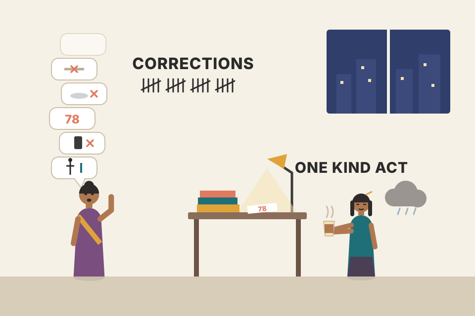
A mother in a Mumbai flat during board-exam season: "Sit straight." "Why is your phone here?" "Only 78 in the mock test?" "Don't eat standing up." By night she has said fifty corrections and not one kind word. Then her daughter quietly brings her a cup of chai without being asked, and the mother realises the girl has been carrying the same exam stress all day, at fifteen.
Where it breaks: children do need guidance, and a parent who never corrects anything is not doing their job either. The story is about the ratio and the tone, not about stopping all correction.
What's happening behind it
From the piece: the father's mistake was a measuring error: he used "the yardstick of his own years". Expecting adult behaviour from a child makes nearly everything the child does look like a fault, and the faults crowd out all the good he can see.
Beyond the book: relationship researcher John Gottman found that stable couples have about five positive interactions for every negative one during conflict. The exact number comes from couples, not parents, but the idea transfers: when almost every interaction is a correction, the relationship itself starts to feel like criticism.
At work
Teams have their own Father Forgets: the tech lead whose every PR review is twelve nitpicks (naming, spacing, a missing comma in a log message) with no word about the clever part of the change. Each comment is fair. Together they tell the author "nothing you do is good enough", and they measure a six-month engineer by a ten-year engineer's yardstick. Mark nits as optional, let the linter handle style, and say what was good.
Self-audit: this week, did I…
Connects to
Praising the slightest improvement, and every improvement: Part Four, Ch.6.
Beginning with praise and honest appreciation before any correction: Part Four, Ch.1.
14 · THE ALTERNATIVE
Instead of condemning, try to understand: Principle 1
pdf p37
Carnegie's close. Rather than condemning people, let us try to understand them: work out why they do what they do. He argues this pays better and is more interesting than criticism, and it grows sympathy, tolerance and kindness. He offers two lines to remember it by: the proverb "To know all is to forgive all", and Dr. Samuel Johnson's remark that God himself does not propose to judge a man until the end of his days. Carnegie's last question: so why should you and I?
"To know all is to forgive all."Proverb, quoted by Carnegie (pdf p37)
Principle 1
Don't criticize, condemn or complain.
What the three words mean in practice. The book does not define them separately; this split is ours, and it helps you notice which one you are about to do.
Word
What it is
Example to catch yourself
Try instead
Criticize
Pointing out what someone did wrong, aimed at them
"Your PR is sloppy."
Ask what happened; talk about the work, not the person.
Condemn
Judging the person's character or worth
"You're just careless."
Assume a reason you can't see yet; ask for it.
Complain
Grumbling about someone, often to others, with no request
"Ops never tells us anything" (in the team chat)
Make a direct, specific request to the person who can fix it.
Picture it
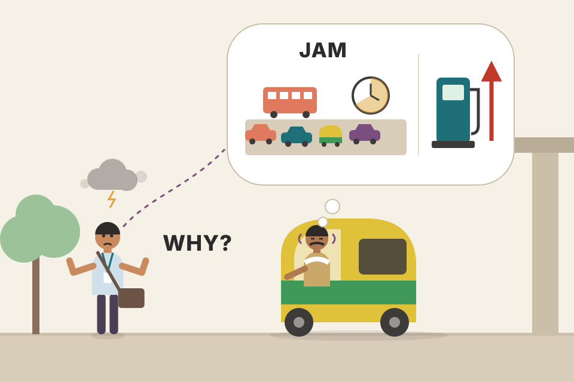
An auto-rickshaw driver in Bengaluru refuses your short trip at 9 a.m. The instant reaction is "these drivers are all cheats". Asking why reveals the rest: the trip ends in a jam where he will sit for 40 minutes earning nothing, and the fuel price went up last month. You may still be annoyed, and you may still book a cab, but you no longer feel the need to lecture him.
Where it breaks: understanding someone's reasons does not mean their action was right, or that you must accept it. "To know all is to forgive all" is an ideal; sometimes knowing all tells you a firm boundary is needed. The chapter's claim is narrower: understanding works better than condemnation at changing what happens next.
What's happening behind it
From the book: understanding replaces the reflex to judge with curiosity. Curiosity has no target to defend against, so the other person's pride is not threatened, and you learn the real cause, which is usually what you need to fix anyway.
Beyond the book: the habit Carnegie describes is close to what psychologists call perspective-taking, and is the practical counter to the fundamental attribution error from plate 1: before blaming someone's character, deliberately look for the situation that would make a reasonable person act the same way.
At work
Make "why" your first reply. Missed deadline: "What got in the way?" before "This is late." A bad production deploy: "What did the dashboard look like when you shipped?" before "Why didn't you check?" A design you dislike: "What were you optimising for?" before "This won't scale." You can still disagree after the answer, and your disagreement will now be about the real problem.
Worked example: three replies to the same stand-up update
A teammate says at stand-up: "Still blocked on the payment webhook, third day."
Criticize / condemn / complain
"Three days? It's one endpoint." (criticize)
"You always get stuck on this kind of thing." (condemn)
Later, to another lead: "I can't rely on him for anything." (complain)
Understand first
"Three days on a webhook usually means something odd is going on. What's blocking you: their sandbox, signatures, or something else? Want me to pair for 30 minutes after stand-up?"
You learn the real blocker (often the provider's sandbox), and the teammate feels helped, not judged.
Part Four is the full toolkit for correcting people without breaking Principle 1, starting at Ch.1 "Begin with praise".
15 · WRAP-UP
Summary and key terms
pdf p25–37
Almost nobody blames themselves. Crowley (a cop killer who called his heart kind), Capone and Schultz (who called themselves public benefactors), and most Sing Sing inmates (per Warden Lawes) all justified what they did. If they do, everyone does.
Criticism is futile and dangerous. Ninety-nine times in a hundred it makes people defend themselves, wounds their pride and sense of importance, and breeds resentment. Skinner: reward teaches faster and lasts longer than punishment. Selye: we crave approval and dread condemnation.
The evidence from life and history. Hard hats came off as soon as the inspector left until Johnston asked and explained instead. Roosevelt's attacks only made Taft justify himself, and the split cost the Republicans the 1912 election. Albert Fall, condemned and imprisoned, never repented; his wife called him the victim. Criticism comes back like a homing pigeon.
The people who learned. Lincoln went from anonymous mocking letters and a near-duel with Shields to almost never criticizing anyone, and left his scathing letter to Meade unsent after imagining himself in Meade's place. Twain wrote furious letters that his wife never posted. Franklin resolved to speak ill of no one. Hoover answered a near-fatal fuelling error with trust.
The cost to the one criticized lasts. Davis's one-line put-down was still Carnegie's main memory of him ten years later. People are creatures of emotion, pride and vanity, not logic; criticism ended Hardy's novels and, Carnegie says, drove Chatterton to suicide.
Start with yourself (Confucius's snow on the neighbour's roof), and at home remember "Father Forgets": a child measured by an adult's yardstick.
The alternative is understanding: work out why people act as they do. "To know all is to forgive all."
Principle 1: Don't criticize, condemn or complain. It changes how you correct, not whether: Johnston and Hoover both still fixed the problem.
Term or phrase
Meaning on this page
Where
Principle 1
Don't criticize, condemn or complain.
pdf p37
Self-justification
The near-universal habit of explaining your own wrong acts so that blame seems unfair.
pdf p25–26
Futile
Criticism makes people defend and justify instead of change.
pdf p27
Dangerous
Criticism hurts pride and the sense of importance, and creates resentment.
pdf p27
Reward vs punishment
Skinner's finding that rewarded behaviour is learned faster and retained better.
pdf p27
Homing pigeons
Criticism comes back to the critic as counter-criticism and resentment.
pdf p29
The unsent letter
Write it to let off steam (Lincoln, Twain); don't send it.
People are driven by pride, vanity and prejudice, not logic.
pdf p34
The yardstick of my own years
Judging a child (or a junior) by an adult's (or a senior's) standards.
pdf p36
To know all is to forgive all
Understanding why someone acted replaces the urge to condemn.
pdf p37
16 · USE IT
Practice this week
beyond the book
Small exercises, each with a way to tell whether it worked. The exercises are ours; the ideas behind them are the chapter's.
Count first. For two days, tally every time you criticize, condemn or complain (out loud, in chat, in PR comments, at home). Do not try to change anything yet. Worked if: you have an honest number, and you know which of the three you do most.
The Johnston question. The next time someone breaks a rule or a convention, ask about the cause before stating the rule ("Was something making that painful?"). Worked if: you learn a reason you did not know, and the behaviour changes without a second reminder.
One unsent letter. When something makes you angry, write the full message in a notes app, not in the chat box. Wait until the next morning, then send a version that asks a question. Worked if: the reply is about the problem, not a defence.
Lincoln's swap. Before giving any negative feedback, write one sentence that starts "If I had been in their place, with…". Worked if: the feedback you finally give is shorter and mentions their constraint.
The Hoover move. When someone makes a mistake they already know about, skip the explanation of what went wrong and hand them a chance to show it will not happen again. Worked if: they bring you the next problem early instead of hiding it.
Father Forgets check. For one evening at home (or one day of code review), keep a 5:1 rule: five appreciative or neutral-friendly remarks for every correction. Worked if: the person seeks you out more, or the corrections you do make get acted on faster.
17 · LIMITS
Where it can go wrong
pdf p27–37 · plus beyond the book
The book's own caveats first.
Correction is still allowed. Johnston still got the hats on; Hoover still dealt with the fuel error; Fall still went to prison. The chapter attacks condemnation and nagging, not accountability.
Carnegie does not say "never criticize your children". He says, explicitly, that he will not tell parents "don't". He asks them to read "Father Forgets" first.
Being right does not protect you. He stresses that criticism breeds resentment no matter how certain you are it is justified. So "but I'm right" is not a reason to go ahead.
He admits his own reading of Lincoln is a guess, and that he does not know who was really to blame in the Roosevelt and Taft quarrel. The stories show the effect of criticism, not who deserved it.
He confesses he learned it slowly. It took him a third of a century; expect to slip.
Beyond the book: our critique
Silence is not the goal. Taken too literally, "don't criticize" becomes never giving feedback, which leaves people to fail without knowing why. Modern feedback practice (for example Kim Scott's "Radical Candor") argues for caring personally and challenging directly. Carnegie's later chapters (Part Four) are really about how to do the second without breaking the first.
Some things need a firm, even public, line. Harassment, safety violations, fraud. Being understanding about someone's reasons is not the same as tolerating the act. The Teapot Dome story itself shows consequences still apply.
"Don't complain" can silence legitimate concerns. Raising a real problem with the person who can fix it (on-call load, unsafe deadlines) is not complaining in Carnegie's sense. Grumbling to third parties with no request is.
Kindness as a tactic can turn into manipulation. If you hold back criticism only to get your way, people sense it. The chapter's ending asks for real understanding, which is a change in how you see people, not a script.
Culture changes the dial. Some workplaces (and families) expect blunter feedback than others. In many Indian and East Asian settings, public criticism also costs "face" more sharply, which makes Carnegie's advice stronger, not weaker. In very direct cultures, too much softening can read as vague. Adjust the wrapping, keep the principle: aim at the work, not the person.
The evidence is anecdotes. The book argues by stories, many from famous men, and a few details are shaky (see the Beyond the book notes on dates and on Chatterton). The general claim is well supported by later research on defensiveness and feedback, but the stories are illustrations, not proof.
18 · TEST YOURSELF
Check yourself
pdf p25–37
Try to answer before opening each one. The first half is story recall; the second half is using the principle.
1. What did "Two Gun" Crowley say about himself, and why does Carnegie start with him?
While firing at the police he wrote that under his coat was a tired but kind heart that would harm nobody, and at Sing Sing he said his death sentence was what he got for defending himself. He had just shot a policeman twice without a word. Carnegie starts with the most extreme case to show that even a killer does not blame himself, so ordinary people will not either.
2. How did Capone, Dutch Schultz and the Sing Sing inmates see themselves?
Capone and Schultz both described themselves as public benefactors (Capone as an unappreciated one who got only abuse). Warden Lewis Lawes reported that few inmates thought of themselves as bad; they reasoned their way to justifying their crimes and felt they should never have been jailed.
3. Carnegie calls criticism both "futile" and "dangerous". What does each word mean here?
Futile: it puts people on the defensive so they justify themselves instead of changing. Dangerous: it wounds their pride and sense of importance and creates resentment. He backs it with Skinner (reward teaches better than punishment) and Selye (we crave approval and dread condemnation).
4. What did George Johnston change about enforcing hard hats, and what happened?
Instead of citing the regulation with authority (which got sullen compliance and hats removed once he left), he asked whether the hats were uncomfortable or ill-fitting, then pleasantly reminded workers the hats protect them and suggested always wearing them. Compliance went up with no resentment.
5. What was the result of Roosevelt's attacks on Taft, according to Carnegie?
The Republican split (Roosevelt's Bull Moose party) left Taft winning only Vermont and Utah and put Wilson in the White House. But the criticism never convinced Taft; he tearfully said he could not see how he could have acted differently. Carnegie says he does not care who was to blame; the point is the criticism persuaded nobody.
6. In Teapot Dome, what did Albert Fall do, and how did his wife react years later?
As Interior Secretary he gave the Navy oil-reserve leases (Elk Hill, Teapot Dome) to his friend Doheny without competitive bidding, took a $100,000 "loan", and sent Marines to drive off rival drillers. He went to prison but never repented. When Herbert Hoover hinted that Harding died worried about a friend's betrayal, Mrs Fall insisted her husband had never betrayed anyone and was himself the one betrayed.
7. What event cured Lincoln of ridiculing people?
In 1842 he mocked the politician James Shields in an anonymous letter in the Springfield Journal. Shields challenged him to a duel; Lincoln chose cavalry broadswords and they met on a Mississippi sandbar before their seconds stopped it. Afterwards he never again wrote an insulting letter or ridiculed anyone, and almost never criticized anyone.
8. Why did Lincoln not send his letter to General Meade?
Carnegie guesses: Lincoln imagined himself at Gettysburg after a week of carnage, with Meade's cautious temperament, and realised he might have done the same. Sending it would relieve his own feelings but make Meade justify himself, condemn Lincoln, lose usefulness and maybe resign. The letter was found among his papers after his death.
9. What did Bob Hoover say to the mechanic, and why does it work?
He put his arm around him and said that, to show he was sure it would never happen again, he wanted him to service his F-51 the next day. The mechanic already knew his mistake; trust protected his pride and gave him every reason to be careful, where a scolding would only have humiliated him.
10. Application: a teammate's PR has no tests, again. You are tempted to write "We've talked about this. Tests are mandatory." What would Carnegie suggest?
Do the Johnston move: ask about the cause ("Anything making tests hard for this module?"), then give the reason that serves them ("these tests are what let you refactor this safely later"). Keep the requirement; drop the condemnation. If there is real friction (bad fixtures), fix it.
11. Application: you are furious at a client who changed scope a day before launch. What is the "Lincoln and Twain" sequence?
Write the angry message somewhere it cannot be sent. Then imagine their position (their boss, their own pressure). Ask what the message would actually achieve. Send the version that asks for a call and focuses on the next step. The draft relieved your feelings; the sent version protects the relationship.
12. Application: does Principle 1 mean a lead should never tell someone their work is below standard?
No. The chapter's own success stories still correct the problem (hats, fuel). The principle forbids condemning, nagging and complaining, not honest correction. Part Four of the book is the "how": begin with praise, call attention to mistakes indirectly, mention your own mistakes first, ask questions, let people save face.
13. Interview: "Tell me about a time you had to give difficult feedback." How does this chapter shape a strong answer?
Show that you first tried to understand why the problem happened, gave the feedback privately and about the work rather than the person, kept their dignity, and focused on what changed afterwards. Mention a constraint they had that you discovered by asking. Avoid a story whose high point is you being right.
14. What does "the yardstick of my own years" mean, and where does it show up at work?
In "Father Forgets", the father realises he judged his small son by adult standards. At work it is judging a junior engineer by a senior's standards, so every small gap looks like a fault (the twelve-nitpick code review).
15. Why did the Richard Harding Davis reply hurt Carnegie for ten years, even though he admits he deserved it?
Because people are creatures of emotion, pride and vanity, not logic. A justified criticism still wounds pride, and stinging criticism can create resentment that lasts decades. Being right does not make criticism safe.
19 · SOURCES
References
pdf p24–37
Book pages and other sources used on this page
Dale Carnegie, How to Win Friends and Influence People, revised edition (1981; Simon & Schuster 2009 printing), Part One, Chapter 1, "If You Want to Gather Honey, Don't Kick Over the Beehive", pdf p25–37 (Part One title page pdf p24). Stories by page: Crowley p25–26; Capone, Schultz, Lawes p26; Wanamaker, Skinner, Selye, Johnston p27–28; Roosevelt and Taft p28; Teapot Dome p28–29; Lincoln p29–33; Twain and Confucius p33; Richard Harding Davis p33–34; Hardy, Chatterton, Franklin, Carlyle p34; Bob Hoover p34–35; "Father Forgets" p35–37; Principle 1 p37.
W. Livingston Larned, "Father Forgets", reprinted in the chapter (pdf p35–37). Retold briefly here, not reproduced.
Beyond the book (named where used): L. Festinger, A Theory of Cognitive Dissonance (1957); R. Baumeister, A. Stillwell, S. Wotman, "Victim and perpetrator accounts of interpersonal conflict" (1990); R. Baumeister et al., "Bad is stronger than good" (2001); E. Deci and R. Ryan, self-determination theory; R. Cialdini, Influence (commitment and consistency); J. Pennebaker on expressive writing; B. Bushman on venting; C. Porath and C. Pearson on workplace incivility; J. Gottman's 5:1 ratio; K. Scott, Radical Candor; Google, Site Reliability Engineering, chapter on post-mortem culture; B. Franklin, Autobiography.
Historical notes (Beyond the book): the 1912 US presidential election; the Teapot Dome scandal (Fall's 1929 conviction); Thomas Hardy's turn from fiction after Jude the Obscure (1895); Thomas Chatterton's death (1770).